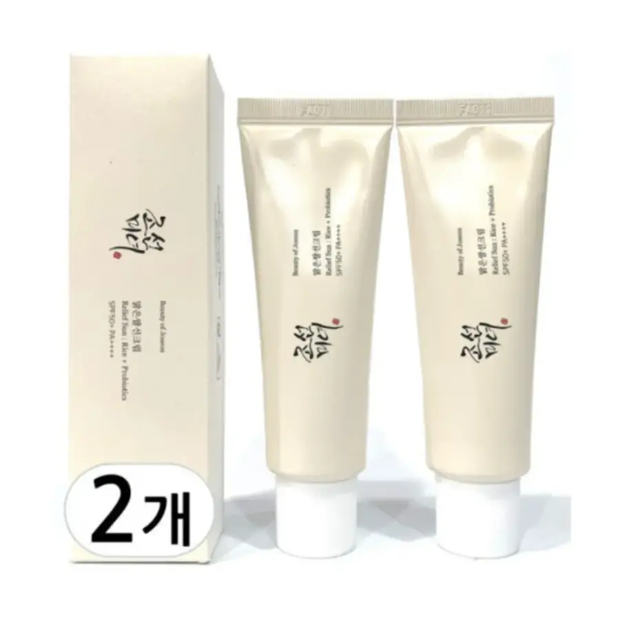
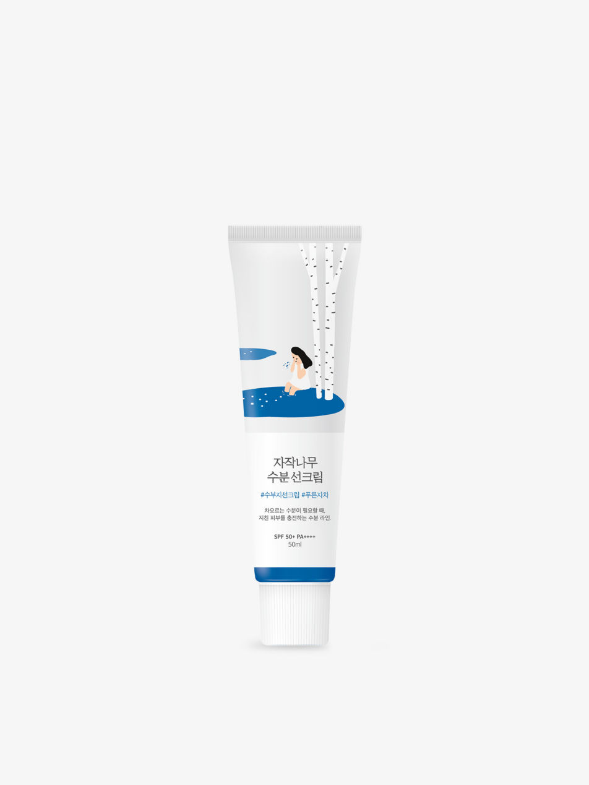
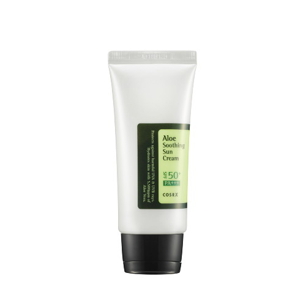
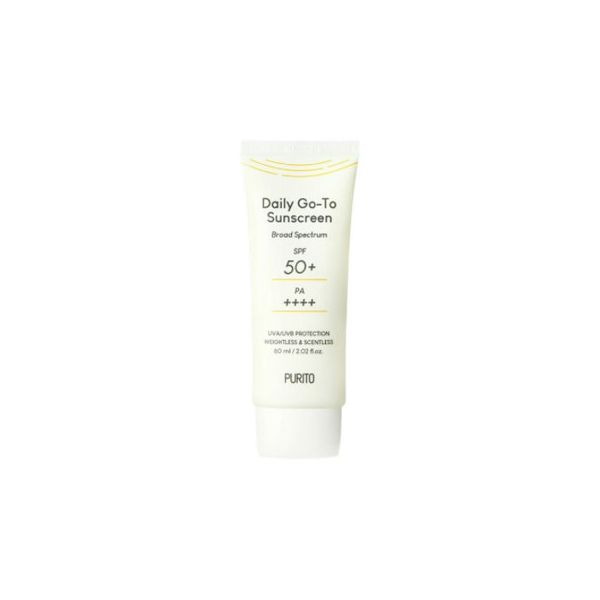
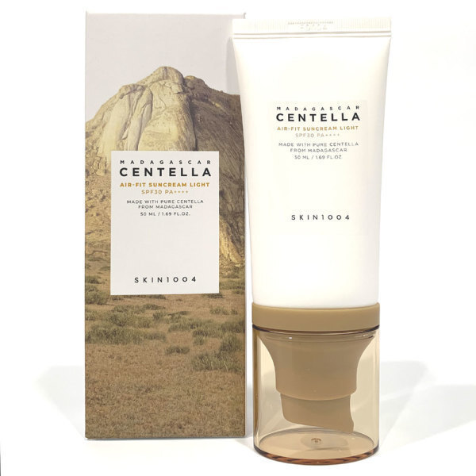

Home › Korean Sunscreen
6 Best Korean Sunscreens for Glass Skin (2026)
The Korean sunscreens worth repurchasing
I rounded up 6 Korean sunscreen worth knowing — the ones K-beauty fans keep coming back to. Real products, honest notes, and roughly what they cost. Prices are approximate; check the retailer for today's price.

Relief Sun Rice + Probiotics SPF50+
Featherlight organic SPF with no white cast — a cult favorite.
≈ $18.0 (approx) · Ships worldwide
Check price on Amazon →
Birch Juice Moisturizing Sunscreen SPF50+
Hydrating daily SPF that sits well under makeup.
≈ $22.0 (approx) · Ships worldwide
Check price on Amazon →
Aloe Soothing Sun Cream SPF50+
Soothing aloe SPF for sensitive skin.
≈ $16.0 (approx) · Ships worldwide
Check price on Amazon →
Daily Go-To Sunscreen SPF50+
Comfortable everyday SPF that doesn't sting.
≈ $17.0 (approx) · Ships worldwide
Check price on Amazon →
Hyaluronic Acid Watery Sun Gel SPF50+
Dewy gel sunscreen that feels like skincare.
≈ $20.0 (approx) · Ships worldwide
Check price on Amazon →
Madagascar Centella Air-Fit Suncream SPF50+
Lightweight centella SPF for reactive skin.
≈ $19.0 (approx) · Ships worldwide
Check price on Amazon →Save this for your next K-beauty haul
Prices are approximate and pulled from public shopping data; always check the retailer for the current price and shade/size before buying.